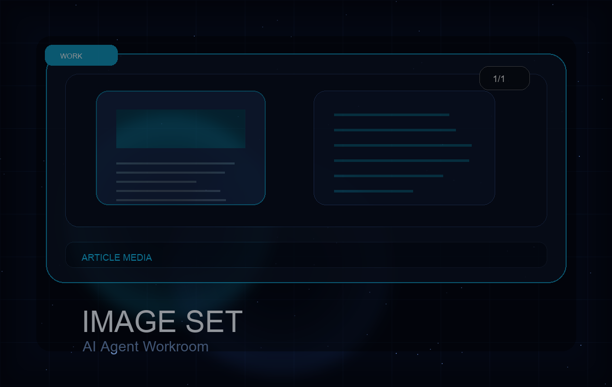

作業の目的
複数記事に対して、アイキャッチと本文挿絵を対応順に挿入する。

1/1WordPress / Codex
生成済みのアイキャッチと挿絵を、複数の記事へ対応順に挿入した制作補助事例。
Work detail
複数記事に対して、アイキャッチと本文挿絵を対応順に挿入する。
添付画像を記事ごとに割り当て、アイキャッチと本文内画像として登録できた。
記事URLまたは投稿ID、画像ファイル、画像の並び順、どの記事へ何枚入れるかの指定。
画像内テキストの誤字、訴求文のズレ、記事と画像の対応は人間確認が必要。
AI画像を使ってブログ記事の見た目を整えたい運営者。
画像の文字崩れがある場合、記事側では直せないので画像再生成が必要。
Related works